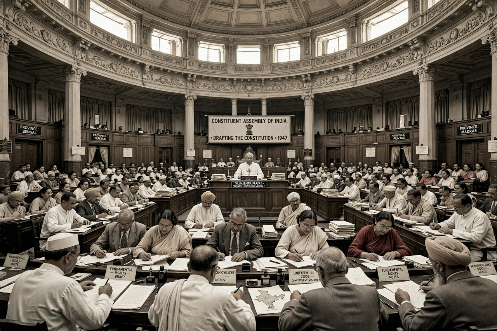

Constituent Assembly of India

The Constituent Assembly of India was elected to frame the Constitution of India. It was set up under the Cabinet Mission Plan of 1946 and first met on 9 December 1946 in the Constitution Hall in New Delhi (now the Central Hall of the old Parliament House). After the partition of India, it also served as the Dominion legislature. The Assembly adopted the Constitution on 26 November 1949, and it came into force on 26 January 1950.
| Type | Unicameral constituent assembly |
|---|---|
| Established | 9 December 1946 |
| Disbanded | 24 January 1950 |
| President | Rajendra Prasad |
| Drafting Committee Chairman | B. R. Ambedkar |
| Members | 389 (before partition); 299 (after) |
| Meeting place | Constitution Hall, New Delhi |
Background and composition
The idea of a constituent assembly was first proposed by M. N. Roy in 1934 and became the official demand of the Indian National Congress in 1935. The Cabinet Mission Plan provided for an assembly of 389 members: 296 from British India, elected indirectly by the provincial legislative assemblies through proportional representation, and 93 representing the princely states. The Muslim League initially boycotted the Assembly; after partition, its members for areas that became Pakistan withdrew, reducing the strength to 299.
Proceedings
Sachchidananda Sinha presided over the first sitting as interim chairman; Rajendra Prasad was then elected permanent president. On 13 December 1946 Jawaharlal Nehru moved the Objectives Resolution, adopted on 22 January 1947, which proclaimed India an independent sovereign republic and guaranteed justice, equality and fundamental freedoms to all citizens.
The Assembly worked through numerous committees. The most important, the Drafting Committee chaired by B. R. Ambedkar, was appointed on 29 August 1947 and produced the draft constitution published in February 1948. The Assembly debated the draft over three readings, considered more than 7,600 amendments, and sat for 165 days spread over nearly three years. Its legal adviser was B. N. Rau, who had prepared the initial draft after studying other constitutions.
Adoption
The Constitution was adopted on 26 November 1949 — now commemorated as Constitution Day — and signed by 284 members. It came into force on 26 January 1950, chosen to honour the Purna Swaraj declaration of 1930. The Assembly then continued as the provisional Parliament of India until the first general elections of 1951–52.